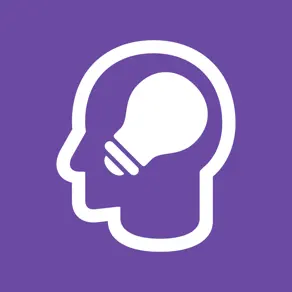
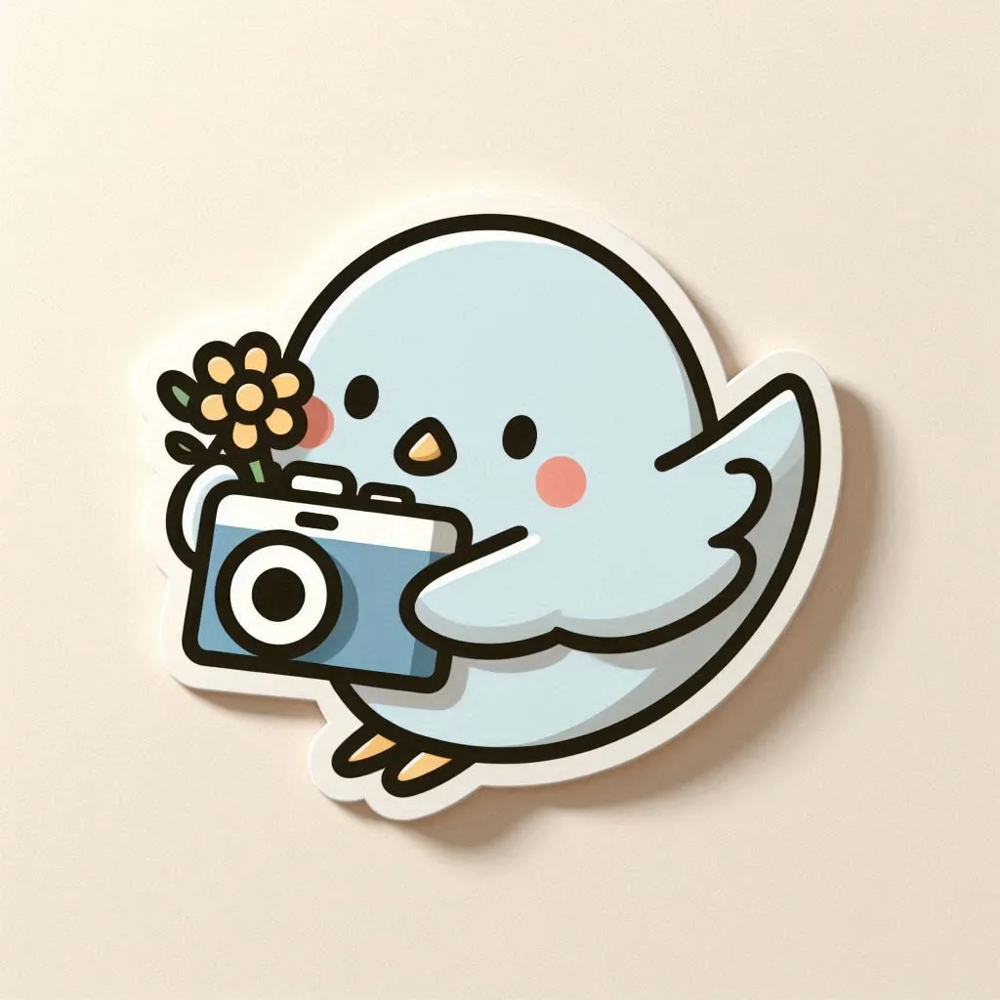
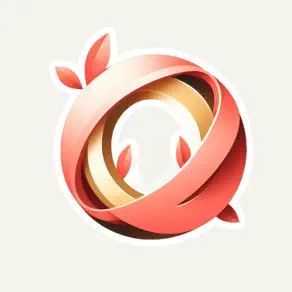
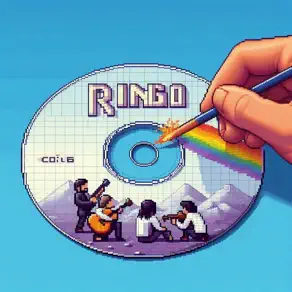
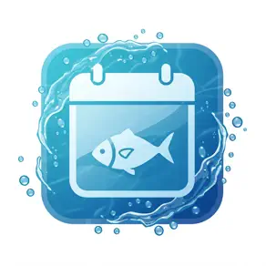
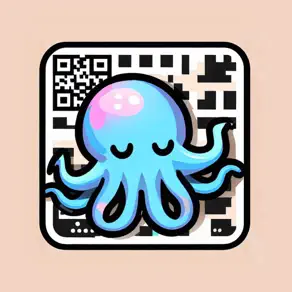
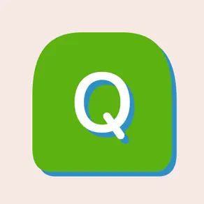
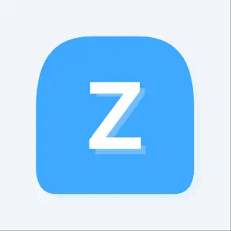
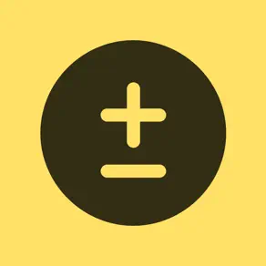
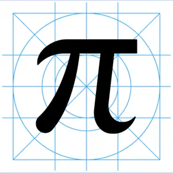
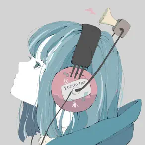
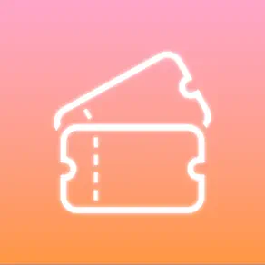
OUR MANIFESTO
續橋涼 — iOS Developer & Creator。
思い出とテクノロジーを融合し、人々の大切な瞬間を、革新的な技術で永遠に。
多くのユーザーに愛される、思い出とテクノロジーを融合したアプリたち
#TRAVEL · #MAP
写真をパズルのように切り取って地図に記録。あなたの旅の軌跡が、美しい思い出の地図になる。
#MEMO · #VIRAL
YouTuberマメさんに紹介され、一気に大ヒット。メモが流れていく新感覚メモアプリ。
#HEALTH · #SNS
毎日のうんちを楽しく記録して友達とシェア。リリース直後からバズり、急成長中。
#TIMER · #AWARD
神アプリグランプリ受賞作品。Live Activity対応でいつでもタイマーを確認。
企業で働きながら、個人開発者として成功を目指し続ける。
それは、テクノロジーで人々の思い出を守りたいから。
「自分のアイデアを形にしたい」その一心で、大学生時代に最初のアプリを開発。
ユーザーからの「思い出を残せて嬉しい」という声に、自分の使命を見つける。
12万ダウンロード突破。思い出を地図に残すという新しい体験が多くの人に愛される。
累計30万ダウンロード達成。神アプリグランプリ受賞。これからも挑戦は続く。
リリース直後から急上昇。わずか数日で2.8万ダウンロードを突破し、代表作に。
写真、場所、感情。すべての思い出には物語がある。
私の使命は、その物語を最高の形で残すこと。
“テクノロジーは冷たいものじゃない。
使い方次第で、人の心を温かくできる。
それが、私が10年間個人開発を続ける理由です。”
屋号 TsuzuKit
京都店
〒600-8208
京都府京都市下京区小稲荷町85-2 Grand-K 京都駅前ビル 201